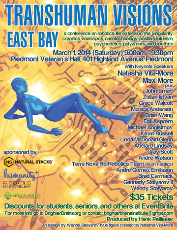

Tranhumanism is a loosely defined movement to extend human physical and mental capabilities through technology. Sometimes abbreviated as humanity+ or H+, Transhumanism is represented by a growing faction of scientists, policymakers, and thinkers who believe in the use of technology to enhance human life at an individual level.
It's regarded by some as quackary, others as a religion. It's related to concepts as abstract as the Singularity and technologies as widespread and contemporary as your smartphone. It means different things to different people, but I personally like to think of it as "hacking the human condition".
This site is a whirlwind look at some of the people, technologies, and ideas that are part of the modern Transhumanism movement. It's open-source and under active development, so please let me know if you have any feedback.
Let's get started...
“Transhumanism is a class of philosophies of life that seek the continuation and acceleration of the evolution of intelligent life beyond its currently human form and human limitations by means of science and technology, guided by life-promoting principles and values.”
Origins of Transhumanism
The term "transhumanism" was coined by the biologist Julian Huxley in 1927, in his essay Religion Without Revelation, in which he muses:
The human species can, if it wishes, transcend itself – not just sporadically, an individual here in one way, an individual there in another way – but in its entirety, as humanity. We need a name for this new belief. Perhaps transhumanism will serve: man remaining man, but transcending himself, by realizing new possibilities of and for his human nature.
The term later reappeared and gained popular recognition when Huxley used it as the title of his 1957 paper Transhumanism - a treatise on the potential of science, technology, and rationality to allow humanity to trancend it's current limitations and problems.
However, the roots of Transhumanism can be traced farther back than that, according to Nick Bostrom, a Philosophy professor at Oxford. In his article A History of Transhumanist Thought, Bostrom points to the myths of Gilgamesh's quest for immortality, tales of the Fountain of Youth, and early achemy as examples of Transhumanist ideas that are centuries old.
The transhumanist movement that is seen today began in the 1960s and 70s at schools like UCLA and the New School for Social Research in New York, where colorful figures like Max More and FM-2030 lectured about Transhumanist ideas and political theories. These early transhumanist groups and thinkers were mostly isolated, with similar interests and ideologies but no unified movement or worldview.

Humanity+ (previously the WTA), continues to hold conferences and events for the Transhumanist community.
Max More and Tom Morrow are arguably the two true creators of the modern unified transhumanist movement. In 1988, they published the first issue of Extropy Magazine, and in 1992 founded the Extropy Institute.Vjr. This had a unifying effect on the community, and the mailing list of the Extropy Institute was the first real forum for discussion within the greater Transhumanist community.
In 1998, Nick Bostrom founded the World Transhumanist Association (now known as Humanity+). This marked a transition for Transhumanism towards a more academic form more acceptable to those who did not frequent the Entropy Magazine discussion boards. After the founding of the WTA, Transhumanism gained more acceptance, with local chapters of the WTA forming worldwide and the scientific and academic community taking notice of the publications the WTA was producing. The WTA has since rebranded itself as Humanity+, but continues to run conferences, publish articles and an online magazine, and maintain a strong member base.
While the technologies and prominent figures in Transhumanism have changed since Huxley's time, the core purpose of the movement has remained the same: to make humans better.
“It's using the technology to provide something extra. It's enhancing. It's upgrading.”
Sensory Enhancement
One of the most promising (and controversial) ways that Transhumanists are trying to make humans better is by augmenting the human senses. Technologies like cochlear implants and artificial retinas are used to allow the deaf and blind to hear and see - it's not that much of a stretch to imagine advanced versions of these technologies being used by non-impaired humans to extend their visual and auditory capabilities. Below is a gallery of some of the most promising sensory research and development - technologies that have the potential to change how humans experience the world.
Tech Gallery
Argus II Retinal Prosthesis
The Argus II is a system developed by Second Sight that pairs a head-mounted camera with a special implant. It allows some blind patients to regain some of their vision by bypassing damaged photoreceptors in their eyes and sending a signal straight to their optic nerve. Eventually, similar technologies could give humans enhanced vision.OTw
The FeelSpace Belt is a device that uses sensory substitution to give users a sense of magnetic direction via haptic feedback. It's a compass hooked up to a set of vibrating motors that the user wears around their waist. It was the subject of a study that found that the device is effective at giving users a "sixth sense" for magnetic direction. xGl
Northpaw is a DIY sensory extension device by the transhumanist group Sensebridge. It's similar to the FeelSpace belt but is ankle-mounted instead of being worn on the user's waist. It represents the "grinder" movement - a loosely affiliated group of artists and transhumanists who use consumer-available electronics and hardware to pursue transhumanist aims, DIY-style.uf8
The eyeborg is a device created to allow Neil Harbisson, born colorblind, to percieve color. It's another sensory substitution device that translates wavelengths of light into audio. Originally it was limited to the visible spectrum, but with the latest version Harbisson is capable of percieving colors in the infrared and ultraviolet range.s9P
“Illness and aging affect all our families. With some longer term, moonshot thinking around healthcare and biotechnology, I believe we can improve millions of lives.”
Life Extension
Life extension is currently one of the most actively researched areas of transhumanism, due to its almost universal appeal and the abundance of funding for medical research. Though life extension technologies all share the same goal of prolonging individual human existience, they often take very different approaches in their attempts to achieve that goal.
Alcor
Alcor, founded in 1972, is one of the oldest organizations out there pursuing life extension technologies. However, the Alcor approach is perhaps the most forward-thinking (and speculative!). Alcor specializes in cryonics, with the idea being to cryogenically preserve people who have terminal illnesses or whose bodies are too old to sustain them until technology that can revive and cure them is developed.
There are a problems with this strategy – chief among them being the fact that it is technically murder to freeze a living person. For this reason, Alcor is limited to freezing individuals just after they are pronounced legally dead. The long-term tenability of cryogenics for a healthy person is very much under debate, so the fact that all of Alcor's 123 patients are technically dead draws a lot of skepticism from the press and academic community.
Google Calico
One of the newest and possibly biggest players in life extension research is the California Life Company, or Google Calico. Announced by Larry Page last year, Calico "will focus on health and well-being, in particular the challenge of aging and associated diseases" Ky5. Calico is an example of "moonshot" or "10x" thinking - a favorite term of Google describing incredibly ambitious projects (like the Apollo Moon landing program) that challenge traditional thinking by pursuing technological gains that are an order of magnitude better than existing technology.
“Are people really focused on the right things?” Page muses in the interview. “One of the things I thought was amazing is that if you solve cancer, you’d add about three years to people’s average life expectancy. We think of solving cancer as this huge thing that’ll totally change the world, but when you really take a step back and look at it, yeah, there are many, many tragic cases of cancer, and it’s very, very sad, but in the aggregate, it’s not as big an advance as you might think.” Wg7
In short, Calico is exciting because it isn't aiming to cure specific diseases or health problems. It's looking to cure aging, and it's backed by one of the biggest and most innovative companies of our time.
Other projects of note
While Google Calico and Alcor are probably the most public examples of organizations pursuing life extension technologies, there are a myriad of other independent researchers and smaller organizations working to solve the problems associated with aging and disease. In fact, you could say that life extension is the most prevalent form of transhumanism in practice today, since very pharmaceutical company and research hospital is effectively conducting life extension research every day (albeit in a slightly more traditional way than Google or Alcor). Here are some of the key areas of interest that are being studied right now:
Regardless of the methodology, life extension research brings up many interesting philosophical and ethical issues that are the source of much of the controversy surrounding transhumanism. Questions like how life extension will affect overpopulation, whether an uploaded mind counts as a person, and the ethics of cryogenically preserving a terminally ill patient don't have obvious answers or solutions. How we chose to think about and address those questions will have huge impacts on the future of life extension and transhumanism.
“Placeholder for a quote about cognitive enhancement.”
Cognitive Enhancement
Section not yet finished
Praesent elit ligula, pharetra vitae massa sed, ullamcorper dapibus mauris. Duis cursus nunc nisl, a fermentum eros bibendum sit amet. Aenean laoreet nisl sed turpis euismod, eu eleifend justo condimentum. Donec at iaculis diam. Cras eros enim, fringilla at leo ac, facilisis tincidunt sapien. Suspendisse vestibulum, orci vel rutrum pharetra, metus diam viverra nulla, in elementum enim dolor ut elit. Donec hendrerit diam tellus, sit amet tincidunt erat accumsan vel. Etiam feugiat eros turpis, a vestibulum elit dignissim id. Nunc ultrices fringilla magna, a imperdiet massa bibendum eget. Vivamus rutrum porttitor lacus, et dictum neque convallis ut. Proin eget elit ligula. Aenean sed mauris condimentum, porttitor ipsum interdum, placerat arcu. Nulla eget tempus mi, vitae ornare purus. Mauris auctor, ligula ut consectetur ullamcorper, dolor neque sollicitudin nibh, nec condimentum arcu erat ac dui.
“Placeholder for a quote about physical enhancement.”
Physical Enhancement
Section not yet finished
Morbi metus eros, rutrum ut felis et, suscipit dignissim erat. Quisque mauris dui, porta eu sem et, accumsan ultrices sapien. Fusce et dolor semper mauris luctus dignissim. Aenean tincidunt orci quis diam varius posuere. Vestibulum aliquam, dolor condimentum dapibus imperdiet, lorem mauris mollis mi, lacinia blandit quam lectus et est. Duis tempus molestie tortor, eu pharetra diam pretium quis. Integer egestas massa non porta vestibulum. Phasellus accumsan metus ac libero imperdiet venenatis. Proin porta nunc vitae ipsum convallis, feugiat suscipit sem gravida. Integer pellentesque aliquam tempor. Aliquam quis quam eu turpis iaculis tincidunt ut vitae enim. In sit amet turpis at sapien dapibus porta. Aliquam volutpat accumsan augue, eu elementum odio consectetur non. Nam ultricies, nulla sed pharetra vehicula, velit diam molestie arcu, sit amet iaculis est enim in lacus. Cras mollis velit nec sem tempor, vitae malesuada mi molestie.
“Placeholder for a quote about transhumanism in the media.”
Transhumanism in the Media
Section not yet finished
Morbi metus eros, rutrum ut felis et, suscipit dignissim erat. Quisque mauris dui, porta eu sem et, accumsan ultrices sapien. Fusce et dolor semper mauris luctus dignissim. Aenean tincidunt orci quis diam varius posuere. Vestibulum aliquam, dolor condimentum dapibus imperdiet, lorem mauris mollis mi, lacinia blandit quam lectus et est. Duis tempus molestie tortor, eu pharetra diam pretium quis. Integer egestas massa non porta vestibulum. Phasellus accumsan metus ac libero imperdiet venenatis. Proin porta nunc vitae ipsum convallis, feugiat suscipit sem gravida. Integer pellentesque aliquam tempor. Aliquam quis quam eu turpis iaculis tincidunt ut vitae enim. In sit amet turpis at sapien dapibus porta. Aliquam volutpat accumsan augue, eu elementum odio consectetur non. Nam ultricies, nulla sed pharetra vehicula, velit diam molestie arcu, sit amet iaculis est enim in lacus. Cras mollis velit nec sem tempor, vitae malesuada mi molestie.
“Placeholder quote about the future of transhumanism.”
The Future of Transhumanism
This is the bit where I write a conclusion.
Maecenas sagittis lorem tellus, vitae aliquet est auctor at. Duis pulvinar nunc in ipsum blandit pharetra. Aenean semper adipiscing odio vel consectetur. Nam sit amet arcu vitae ipsum rhoncus vestibulum sed ut leo. Vivamus sed magna felis. Curabitur ac euismod ante, pulvinar eleifend lorem. Morbi ultricies nulla rhoncus velit elementum laoreet. Maecenas consectetur mauris nisl, eget pharetra sem vulputate vitae. Nullam fringilla dapibus tincidunt. Nulla facilisi. Cras aliquet eu nibh nec pretium. Integer ante risus, consequat vitae ante at, gravida lobortis augue. Aenean tincidunt sem eu nunc ultricies lobortis. Morbi viverra dolor id vestibulum tempus. Aliquam elementum arcu porttitor pulvinar pellentesque.
Pellentesque non malesuada lorem, at pretium tortor. Etiam tincidunt elit eu hendrerit mollis. Donec accumsan sed lorem eget bibendum. Nam euismod ligula sed tincidunt pretium. Donec feugiat posuere risus, eget interdum nibh fringilla quis. Curabitur placerat nunc sit amet purus placerat placerat. Sed neque enim, laoreet at consequat eget, pharetra id orci. Vestibulum gravida rutrum velit.